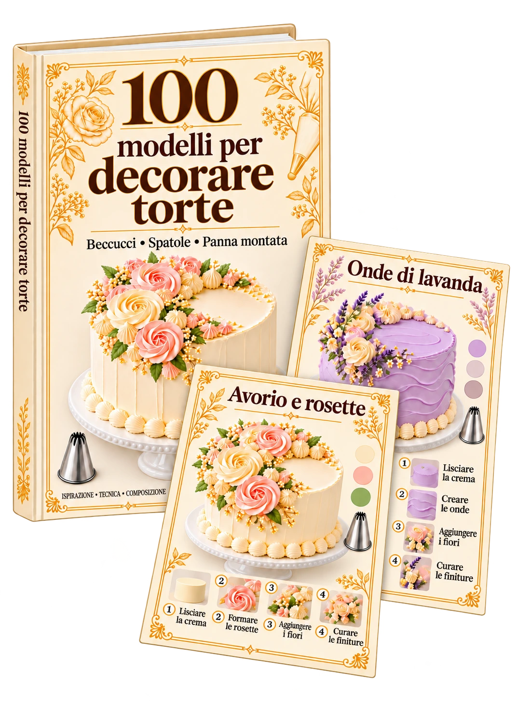
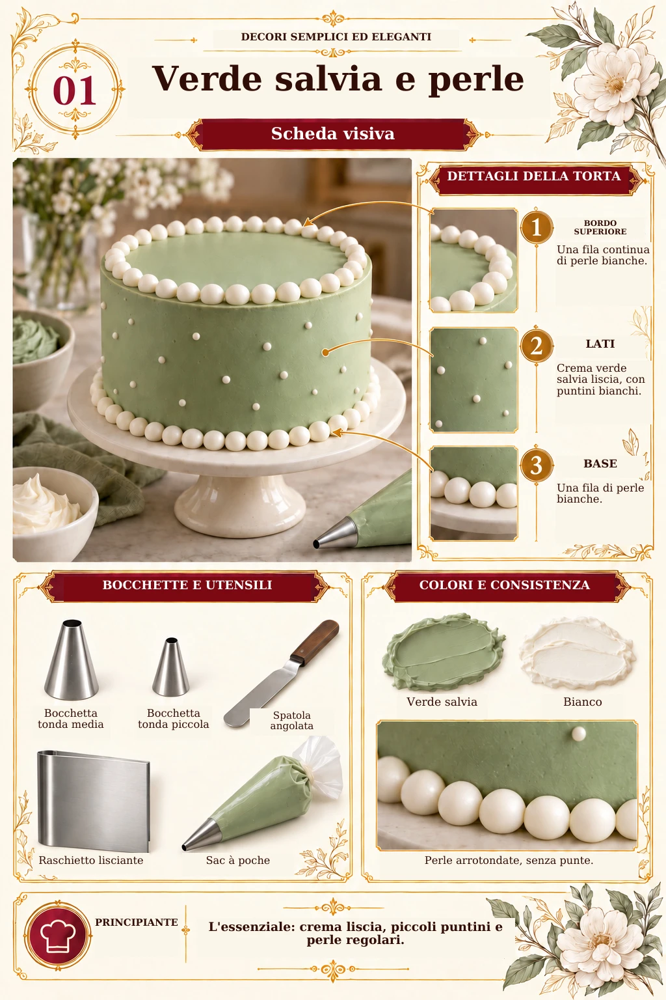
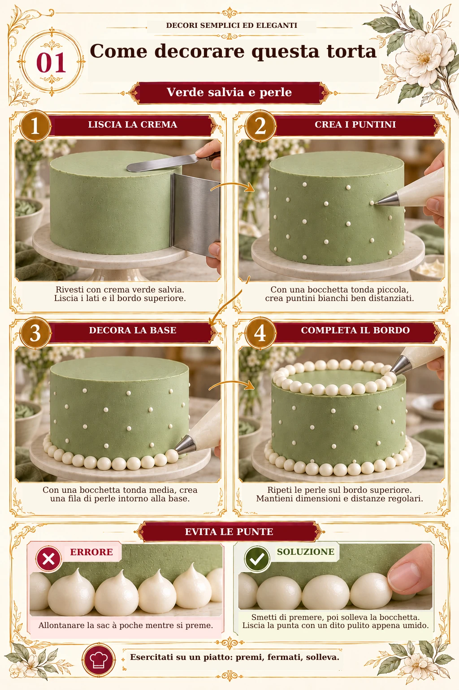
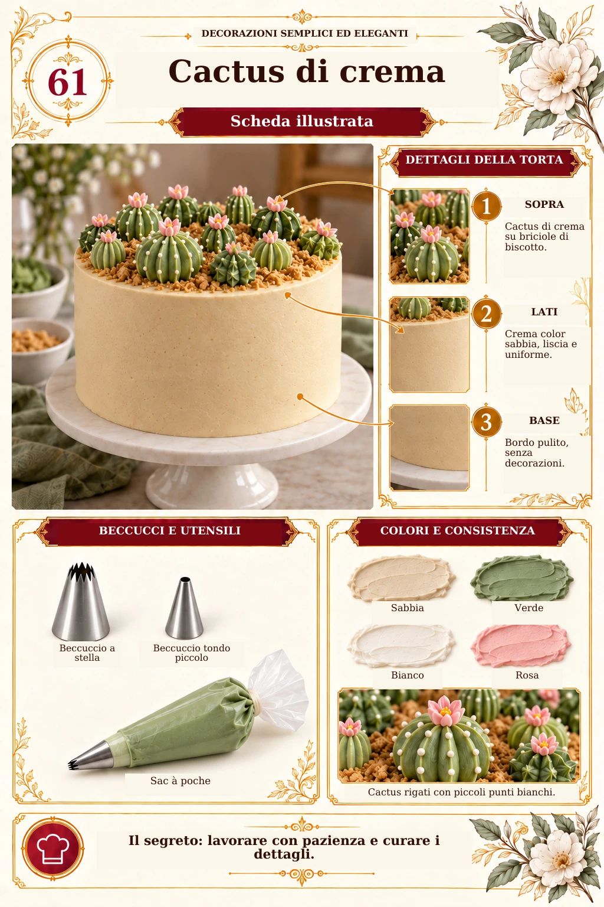
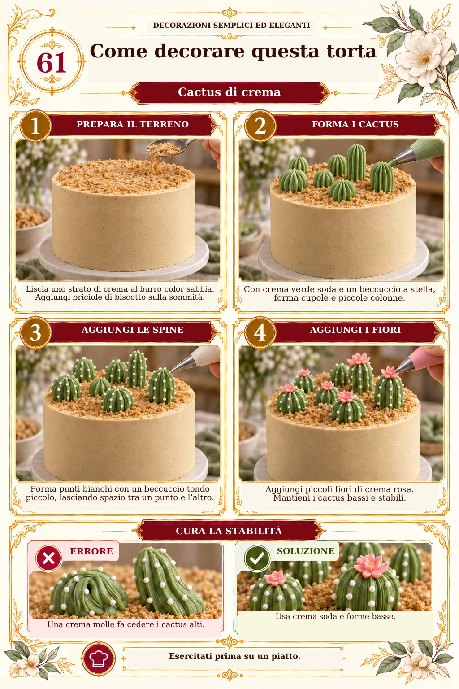
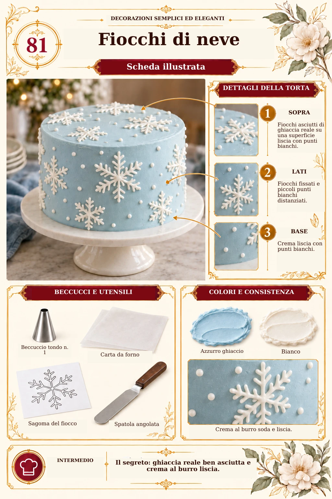
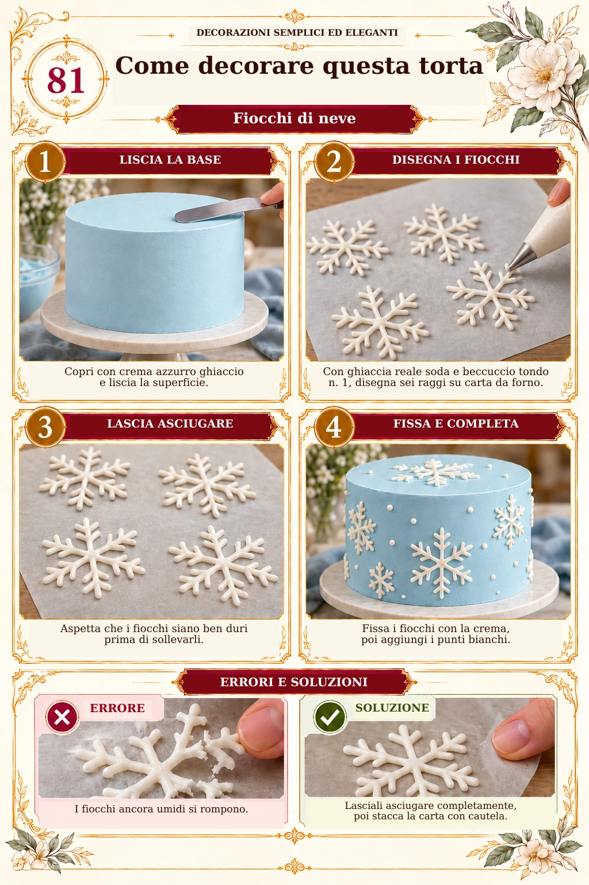

100 modelli per decorare torte con beccucci, spatola e panna montata per variare le tue creazioni

Mockup illustrativo · Prodotto digitale, nessun libro cartaceo
Scegli un modello e prepara la tua decorazione con un riferimento visivo, una palette di colori, gli strumenti suggeriti e una sequenza di lavoro.
Sfoglia la collezione
Un'anteprima delle schede in italiano
Esplora le schede e i passaggi in italiano. La galleria scorre automaticamente; puoi anche trascinarla.






Le tue idee, tutte insieme
Meno ricerche. Più idee per decorare.
✦
Una collezione organizzata da consultare e adattare.
Scegli il modello, leggi la scheda e prepara il piano di lavoro prima di iniziare.
100 modelli di decorazione, con un riferimento visivo per ogni proposta.
Beccucci e strumenti suggeriti per preparare tutto il necessario.
Palette di colori per definire gli abbinamenti prima di colorare la crema.
Sequenza di lavoro per organizzare base, dettagli e finiture.
Schema della decorazione: superficie, bordo, lati e base della torta.
Accorgimenti e adattamenti per aiutarti a preparare le tue prove.
Sono riferimenti per progettare e preparare le decorazioni. La collezione non sostituisce una formazione di base in pasticceria e non comprende videocorsi.
Questa offerta è disponibile per un periodo limitato.
Dal catalogo al piano di lavoro
Come usare la collezione
01
Scegli uno stile
Sfoglia i riferimenti e scegli una decorazione in base all'occasione e al tuo livello di pratica.
02
Prepara il materiale
Individua colori, strumenti e disposizione. Prova ogni effetto su una piccola quantità di crema.
03
Organizza i passaggi
Prepara la base, poi i dettagli e le finiture, tenendo a portata di mano la scheda del modello.
04
Adatta alla tua torta
Adegua le proporzioni al formato scelto e annota ciò che funziona durante le prove.
Le tue domande
Domande frequenti
Devo già saper decorare una torta?
È consigliabile conoscere le basi: preparare una crema, lisciare una torta e usare sac à poche e spatola. La guida organizza idee e passaggi; non è un corso completo per principianti.
Quanti modelli contiene la collezione?
Il catalogo contiene esattamente 100 modelli illustrati. Cinque bonus complementari accompagnano la guida principale.
Si tratta di libri cartacei?
No. Sono file PDF da consultare su telefono, tablet o computer, oppure da stampare. I mockup rappresentano prodotti digitali.
Posso cambiare i colori e le proporzioni?
Le proposte sono riferimenti da adattare. Una palette digitale non è una formula esatta di colorante: il risultato varia in base alla crema, ai prodotti e alle quantità. Fai una prova su una piccola quantità.
Le immagini mostrano torte realizzate fisicamente?
No. Le immagini sono generate digitalmente per illustrare le idee. Non mostrano prove pratiche e non garantiscono un risultato identico. Le schede sono strumenti di preparazione da provare e adattare.
I cinque bonus sono inclusi?
Sì, fanno parte della collezione presentata. Eventuali prodotti aggiuntivi proposti al pagamento sono separati e non sono inclusi in questo elenco.
Ci sono video o assistenza personalizzata?
La collezione comprende PDF da consultare. Non include videocorsi né assistenza personalizzata.
Posso acquistare da questa pagina?
Sì. Il pulsante «Accedi alla collezione» porta alla pagina di pagamento, dove puoi consultare il riepilogo e scegliere gli eventuali prodotti aggiuntivi.
IDEE CHE PRENDONO FORMA
Una collezione per trovare ispirazione, preparare il tuo lavoro ed esplorare nuovi modi di decorare.